폐기물처리기사 (2020-06-06 기출문제)
1과목: 폐기물 개론
1. 도시의 연간 쓰레기발생량이 14,000,000 ton 이고 수거대상 인구가 8,500,000명, 가구당 인원은 5명, 수거인부는 1일당 12,460명이 작업하며 1명의 인부가 매일 8시간씩 작업할 경우 MHT는? (단, 1년은 365일)
- 1.9
- 2.1
- 2.3
- 2.6
(정답률: 71%)

2. 우리나라 쓰레기 수거형태 중 효율이 가장 나쁜 것은?
- 타종수거
- 손수레 문전수거
- 대형쓰레기통수거
- 컨테이너 수거
(정답률: 84%)
3. 물렁거리는 가벼운 물질로부터 딱딱한 물질을 선별하는데 사용하며 경사진 컨베이어를 통해 폐기물을 주입시켜 천천히 회전하는 드럼위에 떨어뜨려 분류하는 것은?
- Stoners
- Secators
- Conveyor sorting
- Jigs
(정답률: 86%)
4. 1일 1인당 1kg의 폐기물을 배출하고, 1가구당 3인이 살며, 총 가구수가 2821 가구일 때 1주일간 배출된 폐기물의 양(ton)은? (단, 1주일간 7일 배출함)
- 43
- 59
- 64
- 76
(정답률: 86%)
5. 폐기물의 수거 및 운반 시 적환장의 설치가 필요한 경우로 가장 거리가 먼 것은?
- 처리장이 멀리 떨어져 있을 경우
- 저밀도 거주지역이 존재할 때
- 수거차량이 대형인 경우
- 쓰레기 수송 비용절감이 필요한 경우
(정답률: 92%)
6. 액주입식 소각로의 장점이 아닌 것은?
- 대기오염 방지시설 이외 재처리 설비가 필요 없다.
- 구동장치가 없어 고장이 적다.
- 운영비가 적게 소요되며 기술개발 수준이 높다.
- 고형분이 있을 경우에도 정상 운영이 가능하다.
(정답률: 76%)
7. 원소분석에 의한 듀롱의 발열량 계산식은?
- Hℓ(kcal/kg) = 81C + 242.5(H-O/8) + 32.5S – 9(9H+W)
- Hℓ(kcal/kg) = 81C + 242.5(H-O/8) + 22.5S – 9(6H+W)
- Hℓ(kcal/kg) = 81C + 342.5(H-O/8) + 32.5S – 6(6H+W)
- Hℓ(kcal/kg) = 81C + 342.5(H-O/8) + 22.5S – 6(9H+W)
(정답률: 80%)
8. 플라스틱 폐기물을 유용하게 재이용할 때 가장 적당하지 않은 이용 방법은?
- 열분해 이용법
- 접촉 산화법
- 파쇄 이용법
- 용융고화 재생 이용법
(정답률: 67%)
9. 스크린 선별에 관한 설명으로 알맞지 않은 것은?
- 일반적으로 도시폐기물 선별에 진동스크린이 많이 사용된다.
- Post-screening의 경우는 선별효율의 증진을 목적으로 한다.
- Pre-screening의 경우는 파쇄설비의 보호를 목적으로 많이 이용한다.
- 트롬멜스크린은 스크린 중에서 선별효율이 좋고 유지관리가 용이하다.
(정답률: 69%)
10. 10일 동안의 폐기물 발생량(m3/day)이 다음표와 같을 때 평균치(m3/day), 표준편차 및 분산계수(%)가 순서대로 옳은 것은?
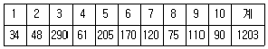
- 120.3, 91.2, 75.8
- 120.3, 85.6, 71.2
- 120.3, 80.1, 66.6
- 120.3, 77.8, 64.7
(정답률: 60%)
11. 발열량 계산식 중 폐기물 내 산소의 반은 H2O 형태로 나머지 반은 CO2의 형태로 전환된다고 가정하여 나타낸 식은?
- Dulong식
- Steuer식
- Scheure-kestner식
- 3성분 조성비 이용식
(정답률: 64%)
12. 다음 중 지정폐기물이 아닌 것은?
- pH 1인 폐산
- pH 11인 폐알칼리
- 기름성분 만으로 이루어진 폐유
- 폐석면
(정답률: 73%)
13. 집배수관을 덮는 필터재료가 주변에서 유입된 미립자에 의해 막히지 않도록 하기 위한 조건으로 옳은 것은? (단, D15, D85는 입경누적 곡선에서 통과한 중량의 백분율로 15%, 85%에 상당하는 입경)
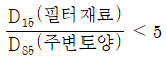
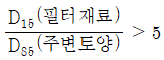
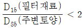
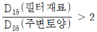
(정답률: 70%)
14. 전과정 평가(LCA)의 평가단계 순서로 옳은 것은?
- 목적 및 범위 설정 → 목록 분석 → 개선 평가 및 해석 → 영향평가
- 목적 및 범위 설정 → 목록 분석 → 영향평가 → 개선 평가 및 해석
- 목록 분석 → 목적 및 범위 설정 → 개선 평가 및 해석 → 영향평가
- 목록 분석 → 목적 및 범위 설정 → 영향평가 → 개선 평가 및 해석
(정답률: 79%)
15. 유기성 폐기물의 퇴비화에 대한 설명으로 가장 거리가 먼 것은?
- 유기성 폐기물을 재활용함으로써 폐기물을 감량화할 수 있다.
- 퇴비로 이용 시 토양의 완충능력이 증가된다.
- 생산된 퇴비는 C/N비가 높다.
- 초기 시설 투자비가 일반적으로 낮다.
(정답률: 80%)
16. 함수율 40%인 폐기물 1톤을 건조시켜 함수율 15%로 만들었을 때 증발된 수분량(kg)은?
- 약 104
- 약 254
- 약 294
- 약 324
(정답률: 70%)
17. 일반폐기물의 관리체계상 가장 먼저 분리해야 하는 폐기물은?
- 재활용물질
- 유해물질
- 자원성물질
- 난분해성물질
(정답률: 73%)
18. 새로운 쓰레기 수송방법이라 할 수 없는 것은?
- Pipe Line 수송
- Monorail 수송
- Container 수송
- Dust-Box 수송
(정답률: 82%)
19. 함수율(습윤중량 기준)이 a%인 도시쓰레기를 함수율이 b%(a＞b)로 감소시켜 소각시키고자 한다면 함수율 감소 후의 중량은 처음 중량의 몇 % 인가?
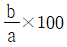
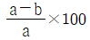
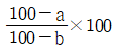
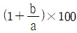
(정답률: 77%)
20. 폐기물의 발생원 선별 시 일반적인 고려사항으로 가장 거리가 먼 것은?
- 주민들의 협력과 참여
- 변화하고 있는 주민의 폐기물 저장 습관
- 새로운 컨테이너, 장비, 시설을 위한 투자
- 방류수 규제기준
(정답률: 80%)
2과목: 폐기물 처리 기술
21. 유기성 폐기물의 생물학적 처리 시 화학 종속영양계 미생물의 에너지원과 탄소원을 옳게 나열한 것은?
- 유기 산화 환원반응, CO2
- 무기 산화 환원반응, CO2
- 유기 산화 환원반응, 유기탄소
- 무기 산화 환원반응, 유기탄소
(정답률: 78%)
22. 중금속의 토양오염원이 아닌 것은?
- 공장폐수
- 도시하수
- 소각장 배연
- 지하수
(정답률: 77%)
23. 희석분뇨의 유량 1,000 m3/day, 유입 BOD 250mg/L, BOD제거율 65%일 때, Lagoon의 표면적(m2)은? (단, Lagoon의 수심 5m, 산화속도 K1=0.53 이다.)
- 1000
- 700
- 500
- 200
(정답률: 55%)
24. 다음 중 유동층 소각로의 특징이 아닌 것은?
- 밑에서 공기를 주입하여 유동매체를 띄운 후 이를 가열시키고 상부에서 폐기물을 주입하여 소각하는 방식이다.
- 내화물을 입힌 가열판, 중앙의 회전축, 일련의 평판상으로 구성되며, 건조영역, 연소영역, 냉각영역으로 구분된다.
- 생활폐기물은 파쇄 등의 전처리가 필히 요구된다.
- 기계적 구동부분이 작아 고장율이 낮다.
(정답률: 70%)
25. 매립년한이 10년 이상 경과된 침출수의 특성에 대한 설명으로 옳은 것은?
- BOD/COD : 0.1미만, COD : 500mg/L 미만
- BOD/COD : 0.1초과, COD : 500mg/L 초과
- BOD/COD : 0.5미만, COD : 10000mg/L 초과
- BOD/COD : 0.5초과, COD : 10000mg/L 미만
(정답률: 76%)
26. 폐기물 매립지의 4단계 분해과정에 대한 설명으로 옳지 않은 것은?
- 1단계 : 호기성 단계로서 며칠 또는 몇 개월 가량 지속되며, 용존산소가 쉽게 고갈된다.
- 2단계 : 혐기성 단계이며 메탄가스가 형성되지 않고 SO42-와 NO3-가 환원되는 단계이다.
- 3단계 : 혐기성 단계로 메탄가스와 수소가스 발생량이 증가되고 온도가 약 55℃ 내외로 증가된다.
- 4단계 : 혐기성 단계로 메탄가스와 이산화탄소 함량이 정상상태로 거의 일정하다.
(정답률: 65%)
27. 퇴비화에 적합한 초기 탄질(C/N)비는 30내외이다. 탄질비가 15인 음식물쓰레기를 초기 퇴비화조건으로 조정하고자 할 때 가장 효과적인 물질은? (단, 혼합비율은 무게비율로 1:1 이다.)
- 우분
- 슬러지
- 낙엽
- 도축폐기물
(정답률: 81%)
28. 매립지에서 사용하는 열가소성(thermoplastic) 합성차수막이 아닌 것은?
- Ethylene propylene diene monomer(EPDM)
- High-density polyethylene(HDPE)
- Chlorinated polyethylene(CPE)
- Polyvinyl chloride(PVC)
(정답률: 61%)
29. 유해성 폐기물을 대상으로 침전, 이온교환기술을 적용하기 가장 어려운 것은?
- As
- CN
- Pb
- Hg
(정답률: 72%)
30. 다음은 음식물쓰레기의 혐기성소화에 있어서 메탄발효조의 효과적인 운전조건과 거리가 먼 것은?
- 온도 : 35 ~ 37℃
- pH : 7.0 ~ 7.8
- ORP : 100 mV
- 발생가스 : CH4 60% 이상 유지
(정답률: 64%)
31. 매립지 바닥 차수막으로서 양이온 교환능 10meq/100g 인 점토를 비중 2로 조성하였다면, 점토 차수막물질 1m3에 교환 흡수될 수 있는 Ca2+ 이온의 질량(g)은? (단, 원자량 : Ca = 40 g/mol)
- 1000
- 2000
- 3000
- 4000
(정답률: 46%)
32. 함수율 97%의 슬러지를 농축하였더니 부피가 처음부피의 1/3로 줄어들었을 때 농축슬러지의 함수율(%)은? (단, 비중은 함수율과 관계없이 1.0으로 동일하다.)
- 95
- 93
- 91
- 89
(정답률: 69%)
33. 호기성 퇴비화에 대한 설명으로 옳지 않은 것은?
- 생산된 퇴비의 비료가치가 높다.
- 퇴비 완성 후에 부피감소가 50% 이하로 크지 않다.
- 퇴비화 과정을 거치면서 병원균, 기생충 등이 사멸된다.
- 다른 폐기물처리 기술에 비해 고도의 기술수준을 요구하지 않는다.
(정답률: 80%)
34. 어느 쓰레기 수거차의 적재능력은 15m3 또는 10톤을 적재할 수 있다. 밀도가 0.6 ton/m3인 폐기물 3000m3을 동시에 수거하려 할 때, 필요한 수거차의 대수는? (단, 기타 사항은 고려하지 않음)
- 180 대
- 200 대
- 220 대
- 240 대
(정답률: 69%)
35. 혐기성소화에 의한 유기물의 분해단계를 옳게 나타낸 것은?
- 산생성 → 가수분해 → 수소생성 → 메탄생성
- 산생성 → 수소생성 → 가수분해 → 메탄생성
- 가수분해 → 수소생성 → 산생성 → 메탄생성
- 가수분해 → 산생성 → 수소생성 → 메탄생성
(정답률: 59%)
36. 호기성 퇴비화공정의 설계 시 운영고려 인자에 관한 설명으로 적합하지 않은 것은?
- 교반/뒤집기 : 공기의 단회로(channeling)현상 발생이 용이하도록 규칙적으로 교반하거나 뒤집어 준다.
- pH 조절 : 암모니아 가스에 의한 질소 손실을 줄이기 위해서 pH 8.5 이상 올라가지 않도록 주의한다.
- 병원균의 제어 : 정상적인 퇴비화 공정에서는 병원균의 사멸이 가능하다.
- C/N비 : C/N 비가 낮은 경우는 암모니아가스가 발생한다.
(정답률: 75%)
37. 도시가정 쓰레기의 매립 시 유출되는 침출수의 정화시설 운전에 주의할 사항이 아닌 것은?
- BOD : N : P의 비율을 조사하여 생물학적 처리의 문제점을 조사할 것
- 강우상태에 따른 매립장에서의 유출 오수량 조절방안을 강구 할 것
- 폐수처리 시 거품의 발생과 제거에 대한 방안을 강구할 것
- 생물학적 처리에 유해한 고농도의 유해중금속물질 처리를 위한 처리 방안을 조사할 것
(정답률: 58%)
38. 폐기물 매립지에 소요되는 연직차수막과 표면차수막의 비교설명으로 옳지 않은 것은?
- 연직차수막은 지중에 수직방향의 차수층이 존재하는 경우에 적용한다.
- 표면차수막은 매립지 지반의 투수계수가 큰 경우에 사용되는 방법이다.
- 표면차수막에 비하여 연직차수막의 단위면적당 공사비는 비싸지만 총공사비는 더 싸다.
- 연직차수막은 지하수 집배수시설이 불필요하나 표면차수막은 필요하다.
(정답률: 68%)
39. 소각처리에 가장 부적합한 폐기물은?
- 폐종이
- 폐유
- 폐목재
- PVC
(정답률: 71%)
40. 해안매립공법인 순차투입방법에 대한 설명으로 옳은 것은?
- 밑면이 뚫린 바지선을 이용하여 폐기물을 떨어뜨려 뿌려줌으로써 바닥지반 하중을 균등하게 해준다.
- 외주호안 등에 부가되는 수압이 증대되어 과대한 구조가 되기 쉽다.
- 수심이 깊은 처분장은 내수를 완전히 배제한 후 순차투입방법을 택하는 경우가 많다.
- 바닥지반이 연약한 경우 쓰레기 하중으로 연약층이 유동하거나 국부적으로 두껍게 퇴적되기도 한다.
(정답률: 60%)
3과목: 폐기물 소각 및 열회수
41. 유동층을 이용한 슬러지(sludge)의 소각특성에 대한 다음 설명 중 틀린 것은?
- 소각로 가동 시 모래층의 온도는 약 600℃ 정도가 적당하다.
- 슬러지의 유입은 로의 하부 또는 상부에서도 유입이 가능하다.
- 유동층에서 슬러지의 연소상태에 따라 유동매체인 모래 입자들의 뭉침현상이 발생할 수도 있다.
- 소각 시 유동매체의 손실이 생겨 보통 매 300시간 가동에 총 모래부피의 약 5% 정도의 유실량을 보충해주어야 한다.
(정답률: 61%)
42. 슬러지를 유동층 소각로에서 소각시키는 경우와 다단로에서 소각시키는 경우의 차이에 대한 설명으로 옳지 않은 것은?
- 유동층 소각로에서는 주입 슬러지가 고온에 의하여 급속히 건조되어 큰 덩어리를 이루면 문제가 일어나게 된다.
- 유동층 소각로에서는 유출모래에 의하여 시스템의 보조기기들이 마모되어 문제점을 일으키기도 한다.
- 유동층 소각로는 고온영역에서 작동되는 기기가 없기 때문에 다단로보다 유지관리가 용이하다.
- 유동층 소각로의 연소온도가 다단로의 연소온도보다 높다.
(정답률: 61%)
43. 어떤 폐기물의 원소조성이 다음과 같을 때 연소 시 필요한 이론공기량(kg/kg)은? (단, 중량기준, 표준상태기준으로 계산)
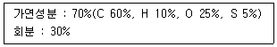
- 6.65
- 7.15
- 8.35
- 9.45
(정답률: 41%)
44. 소각로의 열효율을 향상시키기 위한 대책이라 할 수 없는 것은?
- 연소잔사의 현열손실을 감소
- 전열 효율의 향상을 위한 간헐운전 지향
- 복사전열에 의한 방열손실을 최대한 감소
- 배기가스 재순환에 의한 전열효율 향상과 최종배출가스 온도 저감
(정답률: 70%)
45. 다음 중 일반적으로 사용되는 열분해장치의 종류와 거리가 먼 것은?
- 고정상 열분해 장치
- 다단상 열분해 장치
- 유동상 열분해 장치
- 부유상 열분해 장치
(정답률: 60%)
46. 백 필터(bag filter) 재질과 최고 운전 온도가 옳게 연결 된 것은?
- Wool – 120~180℃
- Teflon – 300~330℃
- Glass fiber – 280~300℃
- Polyesters – 240~260℃
(정답률: 62%)
47. 다음 성분의 중유의 연소의 필요한 이론공기량(Sm3/kg)은?
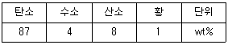
- 1.80
- 5.63
- 8.57
- 17.16
(정답률: 56%)
48. 쓰레기를 소각 후 남은 재의 중량은 소각 전 쓰레기중량의 1/4이다. 쓰레기 30ton을 소각하였을 때 재의 용량이 4m3라면 재의 밀도(ton/m3)는?
- 1.3
- 1.6
- 1.9
- 2.1
(정답률: 73%)
49. 연소의 특성을 설명한 내용으로 알맞지 않는 것은?
- 수분이 많을 경우는 착화가 나쁘고 열손실을 초래한다.
- 휘발분(고분자물질)이 많을 경우는 매연 발생이 억제된다.
- 고정탄소가 많을 경우 발열량이 높고 매연 발생이 적다.
- 회분이 많을 경우 발열량이 낮다.
(정답률: 64%)
50. 소각 시 강열감량에 관한 내용으로 가장 거리가 먼 것은?
- 연소효율에 대응하는 미연분과 회잔사의 강열감량은 항상 일치하지는 않는다.
- 강열감량이 작으면 완전연소에 가깝다.
- 연소효율이 높은 로는 강영감량이 작다.
- 가연분 비율이 큰 대상물은 강열감량의 저감이 쉽다.
(정답률: 50%)
51. 플라스틱을 열분해에 의하여 처리하고자 한다. 열분해 온도가 적절치 못한 것은?
- PE, PP, PS : 550℃에서 완전분해
- PVC, 페놀수지, 요소수지 : 650℃에서 완전분해
- HDPE : 400~600℃에서 완전분해
- ABS : 350~550℃에서 완전분해
(정답률: 49%)
52. 기체연료인 메탄(CH4)의 고위발열량이 9500kcal/Sm3이라면 저위발열량(kcal/Sm3)은?
- 8260
- 8380
- 8420
- 8540
(정답률: 61%)
53. 이론공기량(A0)과 이론연소가스량(G0)은 연료 종류에 따라 특유한 값을 취하며, 연료 중의 탄소분은 저위발열량에 대략 비례한다고 나타낸 식은?
- Bragg의 식
- Rosin의 식
- Pauli의 식
- Lewis의 식
(정답률: 76%)
54. 폐열회수를 위한 열교환기 중 공기예열기에 관한 설명으로 옳지 않은 것은?
- 굴뚝 가스 여열을 이용하여 연소용 공기를 예열하여 보일러의 효율을 높이는 장치이다.
- 연료의 착화와 연소를 양호하게 하고 연소온도를 높이는 부대효과가 있다.
- 대표적으로 판상 공기예열기, 관형 공기예열기 및 재생식 공기예열기 등이 있다.
- 이코노마이저와 병용 설치하는 경우에는 공기예열기를 고온축에 설치한다.
(정답률: 63%)
55. 질량분률이 H : 12.0%, S : 1.4%, O : 1.6%, C : 85%, 수분 2%인 중유 1kg을 연소시킬 때 연소효율이 80%라면 저위발열량(kcal/kg)은? (단, 각 원소의 단위질량당 열량은 C 8100, H : 34000, S : 2500 kcal/kg 이다.)
- 1⑤40
- 9965
- 8218
- 6970
(정답률: 52%)
56. 열분해 장치의 방식 중 주입폐기물의 입자가 작아야 하고 주입량이 크지 못한 단점과 어떤 종류의 폐기물도 처리가 가능한 장점을 가지는 것으로 가장 적절한 것은?
- 부유상 방식
- 유동상 방식
- 다단상 방식
- 고정상 방식
(정답률: 42%)
57. 열분해방법 중 산소 흡입 고온 열분해법의 특징에 대한 설명으로 가장 거리가 먼 것은?
- 폐플라스틱, 폐타이어 등의 열분해시설로 많이 사용된다.
- 분해온도는 높지만 공기를 공급하지 않기 때문에 질소산화물의 발생량이 적다.
- 이동바닥로의 밑으로부터 소량의 순산소를 주입, 노내의 폐기물 일부를 연소, 강열시켜 이 때 발생되는 열을 이용해 상부의 쓰레기를 열분해한다.
- 폐기물을 선별, 파쇄 등 전처리과정을 하지 않거나 간단히 하여도 된다.
(정답률: 43%)
58. 연소실의 운전척도를 나타내는 것이 아닌 것은?
- 공기와 폐기물의 공급비
- 폐기물의 혼합정도
- 연소가스의 온도
- Ash의 발생량
(정답률: 67%)
59. 어떤 소각로에서 배출되는 가스량은 8000 kg/hr이고 온도는 1000℃(1기압 기준)이다. 배기가스는 소각로 내에서 2초간 체류한다면 소각로 용적(m3)은? (단, 표준상태에서 배기가스 밀도 = 0.2 kg/m3)
- 약 84
- 약 94
- 약 104
- 약 114
(정답률: 45%)
60. 소각로에서 소요되는 과잉 공기량이 지나치게 클 경우 나타나는 현상이 아닌 것은?
- 연소실의 온도 저하
- 배기가스에 의한 열손실
- 배기가스 온도의 상승
- 연소 효율 감소
(정답률: 68%)
4과목: 폐기물 공정시험기준(방법)
61. 폐기물의 강열감량 및 유기물 함량을 중량법으로 시험 시 시료를 탄화시키기 위해 사용하는 용액은?
- 15% 황산암모늄용액
- 15% 질산암모늄용액
- 25% 황산암모늄용액
- 25% 질산암모늄용액
(정답률: 66%)
62. 자외선/가기선 분광광도계 광원부의 광원 중 자외부의 광원으로 주로 사용되는 것은?
- 중수소 방전관
- 텅스텐 램프
- 나트륨 램프
- 중공음극 램프
(정답률: 66%)
63. 폐기물이 1톤 미만으로 야적되어 있는 적환장에서 채취하여야 할 최소 시료의 총량(g)은? (단, 소각재는 아님)
- 100
- 400
- 600
- 900
(정답률: 57%)
64. 고상 폐기물의 pH(유리전극법)를 측정하기 위한 실험절차로 ( )에 내용으로 옳은 것은?
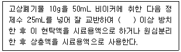
- 10분
- 30분
- 2시간
- 4시간
(정답률: 69%)
65. 0.1N NaOH용액 10mL를 중화하는데 어떤 농도의 HCl 용액이 100mL 소요되었다. 이 HCl 용액의 pH는?
- 1
- 2
- 2.5
- 3
(정답률: 54%)
66. 분석용 저울은 최소 몇 mg까지 달 수 있는 것이어야 하는가? (단, 총칙 기준)
- 1.0
- 0.1
- 0.01
- 0.001
(정답률: 67%)
67. 시료의 채취방법에 관한 내용으로 ( )에 옳은 것은?
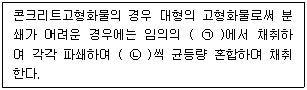
- ㉠ 2개소, ㉡ 100g
- ㉠ 2개소, ㉡ 500g
- ㉠ 5개소, ㉡ 100g
- ㉠ 5개소, ㉡ 500g
(정답률: 58%)
68. 시안-이온전극법에 관한 내용으로 ( )에 옳은 내용은?
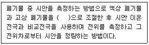
- pH 2 이하의 산성
- pH 4.5~5.3의 산성
- pH10의 알칼리성
- pH 12~13의 알칼리성
(정답률: 58%)
69. 폐기물에 함유된 오염물질을 분석하기 위한 용출시험 방법 중 시료 용액의 조제에 관한 설명으로 ( )에 알맞은 것은?
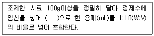
- pH 8.8~9.3
- pH 7.8~8.3
- pH 6.8~7.3
- pH 5.8~6.3
(정답률: 73%)
70. 자외선/가시선 분광법에 의한 시안분석방법에 관한 설명으로 틀린 것은?
- 시료를 pH 10~12의 알칼리성으로 조절한 후에 질산나트륨을 넣고 가열 증류하여 시안화합물을 시안화수소를 유출하는 방법이다.
- 클로라민-T와 피리딘·피라졸론 혼합액을 넣어 나타나는 청색을 620nm에서 측정하는 방법이다.
- 시안화합물을 측정할 때 방해물질들은 증류하면 대부분 제거되나 다량의 지방성분, 잔류염소, 황화합물은 시안화합물을 분석할 때 간섭할 수 있다.
- 황화합물이 함유된 시료는 아세트산아연용액(10W/V%) 2mL를 넣어 제거한다.
(정답률: 44%)
71. 할로겐화 유기물질(기체크로마토그래피-질량분석법) 측정 시 간섭물질에 관한 설명으로 틀린 것은?
- 추출 용매 안에 간섭물질이 발견되면 증류하거나 컬럼 크로마토그래피에 의해 제거한다.
- 디이클로로메탄과 같이 머무름 시간이 긴 화합물을 용매의 피크와 겹쳐 분석을 방해할 수 있다.
- 끓는점이 높거나 극성 유기화합물들이 함께 추출되므로 이들 중에는 분석을 간섭하는 물질이 있을 수 있다.
- 풀루오르화탄소나 디클로로메탄과 같은 휘발성 유기물은 보관이나 운반 중에 격막을 통해 시료 안으로 확산되어 시료를 오염시킬 수 있으므로 현장 바탕시료로서 이를 점검하여야 한다.
(정답률: 55%)
72. 원자흡수분광광도법에 의하여 크롬을 분석하는 경우 적합한 가연성 가스는?
- 공기
- 헬륨
- 아세틸렌
- 일산화이질소
(정답률: 54%)
73. 자외선/가시선 분광법을 이용한 카드뮴 측정에 관한 설명으로 ( )에 옳은 내용은?
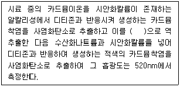
- 염화제일주석산 용액
- 부틸알콜
- 타타르산 용액
- 에틸알콜
(정답률: 59%)
74. 원자흡수분광광도법의 분석장치를 나열한 것으로 적당하지 않은 것은?
- 광원부 – 중공음극램프, 램프점등장치
- 시료원자화부 – 버너, 가스유량 조절기
- 파장선택부 – 분광기, 멀티패스 광학계
- 측광부 – 검출기, 증폭기
(정답률: 50%)
75. 유기질소 화합물 및 유기인을 기체크로마토그래피로 분석할 경우 사용되는 검출기는?
- 불꽃광도검출기(FPD)
- 열전도도검출기(TCD)
- 전자포획형검출기(ECD)
- 불꽃이온화검출기(FID)
(정답률: 58%)
76. 폐기물공정시험기준에서 규정하고 있는 대상폐기물의 양과 시료의 최소 수가 잘못 연결된 것은?
- 1톤 이상 ~ 5톤 미만 : 10
- 5톤 이상 ~ 30톤 미만 : 14
- 100톤 이상 ~ 500톤 미만 : 20
- 500톤 이상 ~ 1000톤 미만 : 36
(정답률: 66%)
77. K2Cr2O7을 사용하여 1000mg/L의 Cr표준원액 100mL를 제조하려면 필요한 K2Cr2O7의 양(mg)은? (단, 원자량 K = 39, Cr = 52, O = 16)
- 141
- 283
- 354
- 565
(정답률: 50%)
78. 폐기물 용출조작에 관한 내용으로 ( )에 옳은 것은?
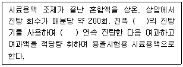
- 4~5cm, 4시간
- 4~5cm, 6시간
- 5~6cm, 4시간
- 5~6cm, 6시간
(정답률: 66%)
79. 폐기물 중 크롬을 자외선/가시선 분광법으로 측정하는 방법에 대한 내용으로 틀린 것은?
- 흡광도는 540nm에서 측정한다.
- 총 크롬을 다이페닐카바자이드를 사용하여 6가크롬으로 전환시킨다.
- 흡광도의 측정값이 0.2~0.8의 범위에 들도록 실험용액의 농도를 조절한다.
- 크롬의 정량한계는 0.002mg 이다.
(정답률: 56%)
80. 정량한계(LOQ)에 관한 설명으로 ( )에 내용으로 옳은 것은?
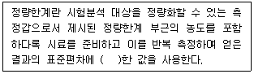
- 3배
- 3.3배
- 5배
- 10배
(정답률: 67%)
5과목: 폐기물 관계 법규
81. 의료폐기물의 수집·운반 차량의 차체는 어떤색으로 색칠하여야 하는가?
- 청색
- 흰색
- 황색
- 녹색
(정답률: 66%)
82. 과징금으로 징수한 금액의 사용 용도로 알맞지 않은 것은?
- 불법 투기된 폐기물의 처리 비용
- 폐기물처리시설의 지도·점검에 필요한 시설·장비의 구입 및 운영
- 폐기물처리기준에 적합하지 아니하게 처리한 폐기물 중 그 폐기물을 처리한 자 또는 그 폐기물의 처리를 위탁한 자를 확인할 수 없는 폐기물로 인하여 예상되는 환경상 위해의 제거를 위한 처리
- 광역폐기물처리시설의 확충
(정답률: 45%)
83. 폐기물처리시설(소각시설, 소각열회수시설이나 멸균분쇄시설)의 검사를 받으려는 자가 해당 검사기관에 검사신청서와 함께 첨부하여 제출하여야 하는 서류와 가장 거리가 먼 것은?
- 설계도면
- 폐기물조성비 내용
- 설치 및 장비확보 명세서
- 운전 및 유지관리계획서
(정답률: 41%)
84. 대통령령으로 정하는 폐기물처리시설을 설치, 운영하는 자는 그 처리시설에서 배출되는 오염물질을 측정하거나 환경부령으로 정하는 측정기관으로 하여금 측정하게 하고, 그 결과를 환경부 장관에게 보고하여야 한다. 다음 중 환경부령으로 정하는 측정기관과 가장 거리가 먼 것은?
- 수도권매립지관리공사
- 보건환경연구원
- 국립환경과학원
- 한국환경공단
(정답률: 64%)
85. 폐기물처리업자나 폐기물처리 신고자가 휴업, 폐업 또는 재개업을 한 경우에 휴업, 폐업 또는 재개업을 한 날부터 몇 일 이내에 신고서(서류 첨부)를 시·도지사나 지방환경관서의 장에게 제출하여야 하는가?
- 3일
- 10일
- 20일
- 30일
(정답률: 56%)
86. 폐기물 처리시설의 유지·관리에 과한 기술관리를 대행할 수 있는 자는?
- 환경보전협회
- 환경관리인협회
- 폐기물처리협회
- 한국환경공단
(정답률: 68%)
87. 기술관리인을 두어야 할 폐기물처리시설이 아닌 것은?
- 시간당 처리능력이 120킬로그램인 감염성 폐기물 대상 소각시설
- 면적이 3천5백 제곱미터인 지정폐기물 매립시설
- 절단시설로서 1일 처리능력이 150톤인 시설
- 연료화시설로서 1일 처리능력이 8톤인 시설
(정답률: 57%)
88. 다음 중 사업장폐기물에 해당되지 않는 것은?
- 대기환경보전법에 따라 배출시설을 설치 운영하는 사업자에서 발생하는 폐기물
- 물환경보전법에 따라 배출시설을 설치 운영하는 사업자에서 발생하는 폐기물
- 소음진동법관리법에 따라 배출시설을 설치 운영하는 사업자에서 발생하는 폐기물
- 환경부장관이 정하는 사업장에서 발생하는 폐기물
(정답률: 51%)
89. 폐기물처리시설을 설치하고자 하는 자가 제출하여야 하는 폐기물처분시설 설치승인 신청서에 첨부되는 서류로 틀린 것은?
- 처분 대상 폐기물의 처분계획서
- 폐기물처분 시 소요되는 예산계획서
- 폐기물 처분시설의 설계도서
- 처분 후에 발생하는 폐기물의 처분계획서
(정답률: 50%)
90. 다음 용어의 정의로 틀린 것은?
- 환경용량이란 일정한 지역에서 환경오염 또는 환경훼손에 대하여 환경이 스스로 수용·정화 및 복원하여 환경의 질을 유지할 수 있는 한계를 말한다.
- 생활환경이란 인공적이지 않는 대기, 물, 토양에 관한 자연과 관련된 주변 환경을 말한다.
- 자연환경이란 지하·지표(해양을 포함한다.) 및 지상의 모든 생물과 이들을 둘러싸고 있는 비생물적인 것을 포함한 자연의 상태(생태계 및 자연경관을 포함한다.)를 말한다.
- 환경보전이란 환경오염 및 환경훼손으로부터 환경을 보호하고 오염되거나 훼손된 환경을 개선함과 동시에 쾌적한 환경의 상태를 유지·조성하기 위한 행위를 말한다.
(정답률: 67%)
91. 다음 중 5년 이하의 징역이나 5천만원 이하의 벌금에 처하는 경우가 아닌 것은?
- 허가를 받지 아니하고 폐기물처리업을 한 자
- 폐쇄명령을 이행하지 아니한 자
- 대행계약을 체결하지 아니하고 종량제 봉투 등을 제작·유통한 자
- 영업정지 기간 중에 영업행위를 한 자
(정답률: 54%)
92. 지정폐기물 중 부식성폐기물(폐알칼리) 기준으로 옳은 것은?
- 액체상태의 폐기물로서 수소이온 농도지수가 12.0 이상인 것으로 한정하며 수산화칼륨 및 수산화나트륨을 포함한다.
- 액체상태의 폐기물로서 수소이온 농도지수가 12.0 이상인 것으로 한정하며 수산화칼륨 및 수산화나트륨을 제외한다.
- 액체상태의 폐기물로서 수소이온 농도지수가 12.5 이상인 것으로 한정하며 수산화칼륨 및 수산화나트륨을 포함한다.
- 액체상태의 폐기물로서 수소이온 농도지수가 12.5 이상인 것으로 한정하며 수산화칼륨 및 수산화나트륨을 제외한다.
(정답률: 56%)
93. '대통령령으로 정하는 폐기물처리시설'을 설치·운영하는 자는 그 폐기물 처리시설의 설치·운영이 주변지역에 미치는 영향을 3년마다 조사하여 그 결과를 환경부 장관에게 제출하여야 한다. 다음 중 대통령령으로 정하는 폐기물처리시설 기준으로 틀린 것은?
- 매립면적 1만 제곱미터 이상의 사업장 지정폐기물 매립시설
- 매립면적 15만 제곱미터 이상의 사업장 일반폐기물 매립시설
- 시멘트 소성로(폐기물을 연료로 하는 경우로 한정한다.)
- 1일 처분능력이 10톤 이상인 사업장폐기물 소각시설
(정답률: 58%)
94. 폐기물 중간처분업자가 폐기물처리업의 변경허가를 받아야 할 중요사항으로 틀린 것은?
- 처분대상 폐기물의 변경
- 운반차량(임시차량은 제외한다)의 증차
- 처분용량의 100분의 30 이상의 변경
- 폐기물 재활용시설의 신설
(정답률: 51%)
95. 폐기물 재활용을 금지하거나 제한하는 항목 기준으로 옳지 않은 것은?
- 폴르클로리네이티드비페닐(PCBs)을 환경부령으로 정하는 농도 이상 함유하는 폐기물
- 폐유독물 등 인체나 환경에 미치는 위해가 매우 높을 것으로 우려되는 폐기물 중 대통령령으로 정하는 폐기물
- 태반을 포함한 의료폐기물
- 폐석면
(정답률: 61%)
96. 폐기물관리법에서 사용하는 용어의 정의로 틀린 것은?
- 생활폐기물이란 사업장폐기물 외에 폐기물을 말한다.
- 폐기물이란 쓰레기, 연소재, 오니, 폐유, 폐산, 폐알칼리 및 동물의 사체 등으로서 사람의 생활이나 사업활동에 필요하지 아니하게 된 물질을 말한다.
- 지정폐기물이란 사업장폐기물 중 폐유·폐산 등 주변 환경을 오염시킬 수 있거나 의료폐기물 등 인체에 위해를 줄 수 있는 해로운 물질로서 대통령령으로 정하는 폐기물을 말한다.
- 폐기물처리시설이란 폐기물의 최초 및 중간처리시설과 최정처리시설로서 환경부령으로 정하는 시설을 말한다.
(정답률: 71%)
97. 폐기물관리법을 적용하지 아니하는 물질에 대한 내용으로 옳지 않은 것은?
- 용기에 들어 있지 아니한 기체상의 물질
- 물환경보전법에 의한 오수·분뇨 및 가축분뇨
- 하수도법에 따른 하수
- 원자력안전법에 따른 방사성물질과 이로 인하여 오염된 물질
(정답률: 65%)
98. 방치폐기물의 처리를 폐기물처리 공제조합에 명할 수 있는 방치폐기물 처리량 기준으로 ( )에 옳은 것은?(오류 신고가 접수된 문제입니다. 반드시 정답과 해설을 확인하시기 바랍니다.)
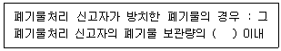
- 1.5배
- 2배
- 2.5배
- 3배
(정답률: 64%)
99. 국가 차원의 환경보전을 위한 종합계획인 국가환경종합계획의 수립 주기는?
- 20년
- 15년
- 10년
- 5년
(정답률: 55%)
100. 생활폐기물 처리대행자(대통령령이 정하는 자)에 대한 기준으로 틀린 것은?
- 폐기물처리업자
- 폐기물관리법에 따른 건설폐기물 재활용업의 허가를 받은 자
- 자원의 절약과 재활용촉진에 관한 법률에 따른 재활용센터를 운영하는 자(같은 법에 따른 대형폐기물을 수집·운반 및 재활용하는 것만 해당한다.)
- 폐기물처리 신고자
(정답률: 38%)
1. 하루에 수거해야 할 쓰레기량
= 연간 쓰레기 발생량 / 365일
= 14,000,000 / 365
≈ 38,356.16 ton
2. 하루에 수거해야 할 가구 수
= 수거대상 인구 / 가구당 인원
= 8,500,000 / 5
= 1,700,000 가구
3. 하루에 수거해야 할 가구 당 쓰레기량
= 하루에 수거해야 할 쓰레기량 / 하루에 수거해야 할 가구 수
≈ 38,356.16 / 1,700,000
≈ 0.0226 ton
4. 하루에 수거해야 할 가구 당 쓰레기량을 수거인부가 처리할 수 있는 시간으로 환산
= 하루에 수거해야 할 가구 당 쓰레기량 / (수거인부 수 * 1일당 작업 시간)
≈ 0.0226 / (12,460 * 8)
≈ 0.0000002275 ton/인부
5. MHT는 하루에 수거해야 할 가구 당 쓰레기량을 수거인부가 처리할 수 있는 시간으로 나눈 값
= 하루에 수거해야 할 가구 당 쓰레기량을 수거인부가 처리할 수 있는 시간으로 환산 / 1일당 작업 시간
≈ 0.0000002275 / 8
≈ 0.0000000284 ton/인부
따라서, MHT는 2.6이 아닌 0.0000000284이 된다. 이유는 계산 과정에서 소수점 이하의 값을 적절하게 환산하지 않아서 발생한 오차이다.